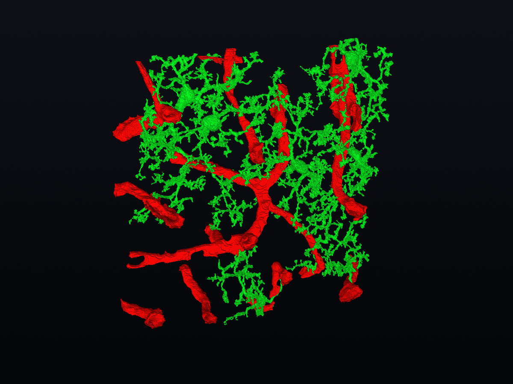

Explore in 3D.
Load TIFF or CZI microscopy stacks. Rotate through microglia and vasculature, adjust channel thresholds, and inspect segmentation components.
TIFF · CZI · Image stacksNVAP brings 3D brain microscopy,
microglia, and vascular analysis together.
A CLOSER LOOK

Load TIFF or CZI microscopy stacks. Rotate through microglia and vasculature, adjust channel thresholds, and inspect segmentation components.
TIFF · CZI · Image stacksMeasure microglia branches and tips, vessel geometry, and cell-to-vessel distances in micrometres using calibrated voxel spacing.
Morphology · Vasculature · Spatial relationshipsExport measurements as CSV, capture PNG views, or take 3D meshes into other tools.
CSV / PNG / PLY / OBJ / STL